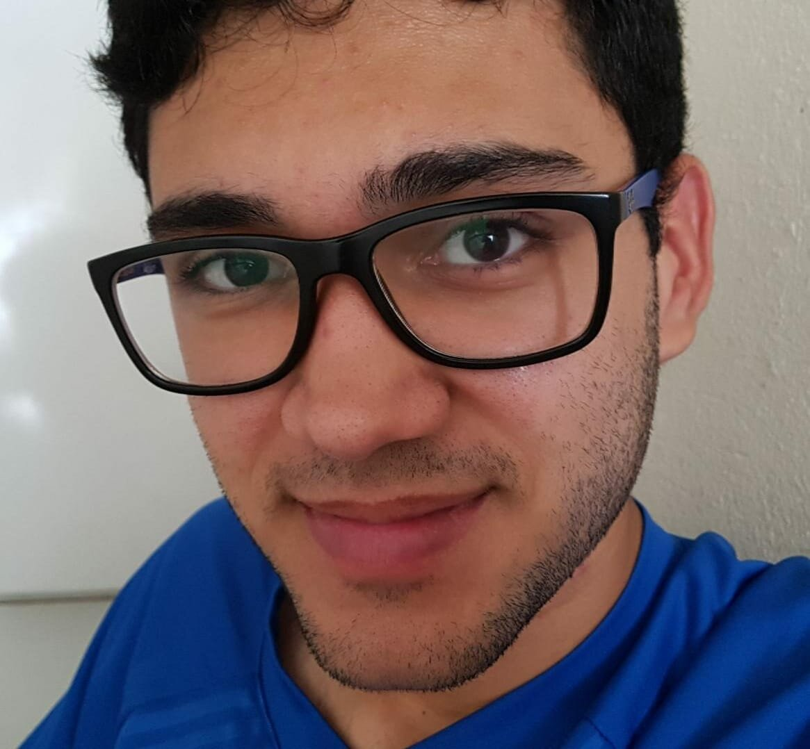
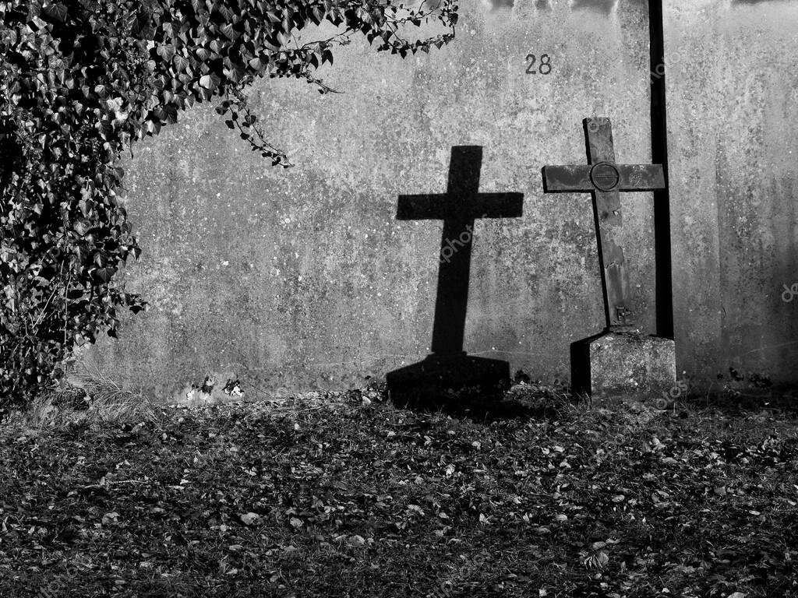
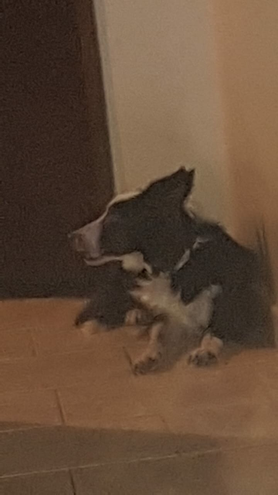
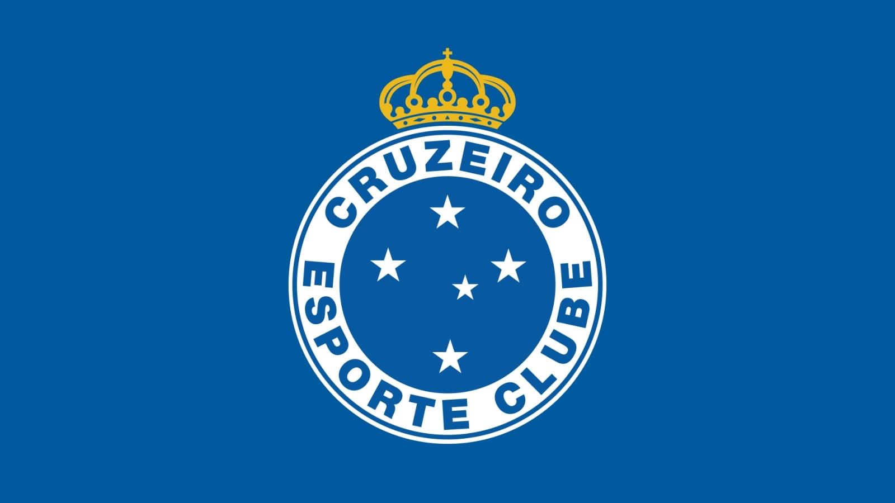

Curriculum VitaeJoão Pedro Albuquerque de Oliveira |
 |
Rua Osaka, 4, Bairro Parque Dez de Novembro Manaus-AM, Brasil
Nascimento: 05/03/2002
Telefone: +55 92 98431-2526
Email: joao.p.albuquerque20@gmail.com
English - Fluente
Spanish - Intermediário
Francês - Básico
Portugûes - Nativo
|  |
Por quê esse medo? O pós-vida é um mistério por completo e não há respostas concretas para isso. Pensar nisso acaba fazendo eu acreditar que não existe nada depois da morte e que tudo que estamos vivendo foi em vão, todos conhecimentos adquiridos, todas relações sociais, todos que conhece, simplesmente se vão e nunca mais terá a chance de ter contato com nenhum deles, algo realmente muito triste, pensando principalmente quando se trata de perder pessoas que ama. |
|  | Gosto, porém tenho apenas um cachorro e um gato, os outros cachorros que tinha infelizmente faleceram. O cachorro que ainda continua conosco é um Border Collie. Ela se chama Jolie, é muito brincalhona e animada, mesmo que bem velhinha. O gato é um vira-lata e se chama Dilson, ele é bastante antipático e gosta de passar todo o dia sozinho dormindo. |
|  |
Cruzeiro Esporte ClubeMinha paixão pelo Cruzeiro surgiu no berço, cresci em família cruzeirense e tenho muito orgulho disso.Cruzeiro Esporte Clube |